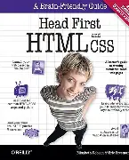

"Structure, Presentation, & Behavior; these are the components of webdev."
Hi! My name is Matthew, and this is where I keep track of my Webdev learning progress. I'm currently working on WebDev and Java, notes taken while learning HTML, CSS, and Javascript. More sections to come at a later date.
Page Progress: 82
Primary Source:
